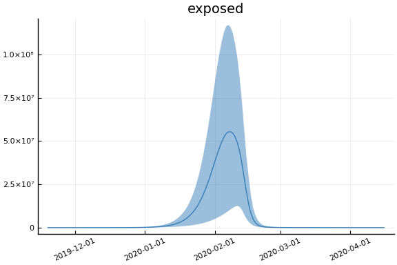
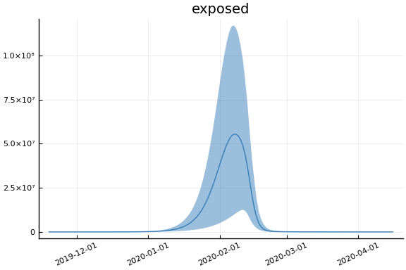

This work is licensed under a Creative Commons Attribution-ShareAlike 4.0 International License
using CovidSEIR, Plots, DataFrames, JLD2, StatsPlots
Plots.pyplot()
jmddir = normpath(joinpath(dirname(Base.find_package("CovidSEIR")),"..","docs","jmd"))
covdf = covidjhudata();
China¶
using Dates
dayt0 = Dates.Date("2020-01-22") - Dates.Day(1)
china = CountryData(covdf, "China", 1)
CovidSEIR.CountryData{Float64,Int64}(1.39273e9, [1, 2, 3, 4, 5, 6, 7, 8, 9,
10 … 69, 70, 71, 72, 73, 74, 75, 76, 77, 78], [17.0, 18.0, 26.0, 42.0, 5
6.0, 82.0, 131.0, 133.0, 171.0, 213.0 … 3308.0, 3309.0, 3316.0, 3322.0, 3
326.0, 3330.0, 3333.0, 3335.0, 3335.0, 3337.0], [28.0, 30.0, 36.0, 39.0, 49
.0, 58.0, 101.0, 120.0, 135.0, 214.0 … 75923.0, 76206.0, 76405.0, 76565.0
, 76760.0, 76946.0, 77207.0, 77310.0, 77410.0, 77567.0], [503.0, 595.0, 858
.0, 1325.0, 1970.0, 2737.0, 5277.0, 5834.0, 7835.0, 9375.0 … 2967.0, 2764
.0, 2640.0, 2545.0, 2425.0, 2267.0, 2062.0, 2020.0, 1973.0, 1905.0])
using Turing
mdl = CovidSEIR.TimeVarying.countrymodel(china)
cc = Turing.psample(mdl, NUTS(0.65), 5000, 4)
import JLD2
JLD2.@save "$jmddir/china_$(Dates.today()).jld2" cc dayt0
JLD2.@load "$jmddir/china_tv_2020-04-09.jld2" cc dayt0;
Estimates¶
plot(cc)

describe(cc)
2-element Array{MCMCChains.ChainDataFrame,1}
Summary Statistics
parameters mean std naive_se mcse ess r_hat
────────── ────────── ───────── ──────── ──────── ──────── ──────
a 0.6195 0.2265 0.0018 0.0166 64.2570 1.8307
pE0 0.0000 0.0000 0.0000 0.0000 100.7389 1.1140
p[1] 0.0147 0.0605 0.0005 0.0041 64.2570 1.1205
p[2] 0.4263 0.4286 0.0034 0.0337 64.2570 6.6704
sigC 13041.9455 4889.0789 38.6516 383.1459 64.2570 4.9322
sigD 107.1081 120.4377 0.9521 9.5028 64.2570 8.0415
sigRc 7992.4769 3580.6074 28.3072 281.6652 64.2570 5.3393
β[1] 0.5196 0.4704 0.0037 0.0354 64.2570 1.8358
β[2] 0.5360 0.5966 0.0047 0.0391 67.6265 1.3326
β[3] 0.4654 0.4828 0.0038 0.0370 64.2570 1.7957
γ[1] 0.5839 0.5488 0.0043 0.0426 64.2570 3.2973
γ[2] 0.1514 0.1325 0.0010 0.0087 65.0595 1.3789
ρ[1] 0.9434 0.0778 0.0006 0.0054 64.2570 1.5063
ρ[2] 83.5967 2.1372 0.0169 0.1661 64.2570 2.1729
τ 0.0009 0.0013 0.0000 0.0001 67.0957 1.3091
Quantiles
parameters 2.5% 25.0% 50.0% 75.0% 97.5%
────────── ───────── ───────── ────────── ────────── ──────────
a 0.2550 0.4135 0.6368 0.8140 0.9783
pE0 0.0000 0.0000 0.0000 0.0000 0.0000
p[1] 0.0000 0.0001 0.0002 0.0048 0.1339
p[2] 0.0021 0.0034 0.2299 0.8652 0.9827
sigC 4483.9308 9937.9467 14808.8420 16370.0542 19386.8647
sigD 28.6542 35.6943 40.2870 105.1679 354.1325
sigRc 4383.9458 5166.4610 6488.4776 10762.5863 15248.7491
β[1] 0.0090 0.1510 0.2454 0.8891 1.5531
β[2] 0.0017 0.0637 0.3203 0.8082 2.0946
β[3] 0.0176 0.1076 0.2390 0.7528 1.7028
γ[1] 0.0727 0.0787 0.2264 1.0778 1.5741
γ[2] 0.0409 0.0456 0.0901 0.2162 0.5025
ρ[1] 0.7489 0.9008 0.9923 0.9984 0.9998
ρ[2] 80.9140 81.9111 83.0247 85.4440 88.0343
τ 0.0000 0.0000 0.0002 0.0014 0.0045
Fit¶
sdf = simtrajectories(cc, china, 1:150)
f = plotvars(sdf, china, dayt0=dayt0)
plot(f.fit, xlim=nothing, ylim=(0, maximum(china.active)*2))

Implications¶
for fig in f.trajectories
display(plot(fig, xlim=nothing))
end
 
